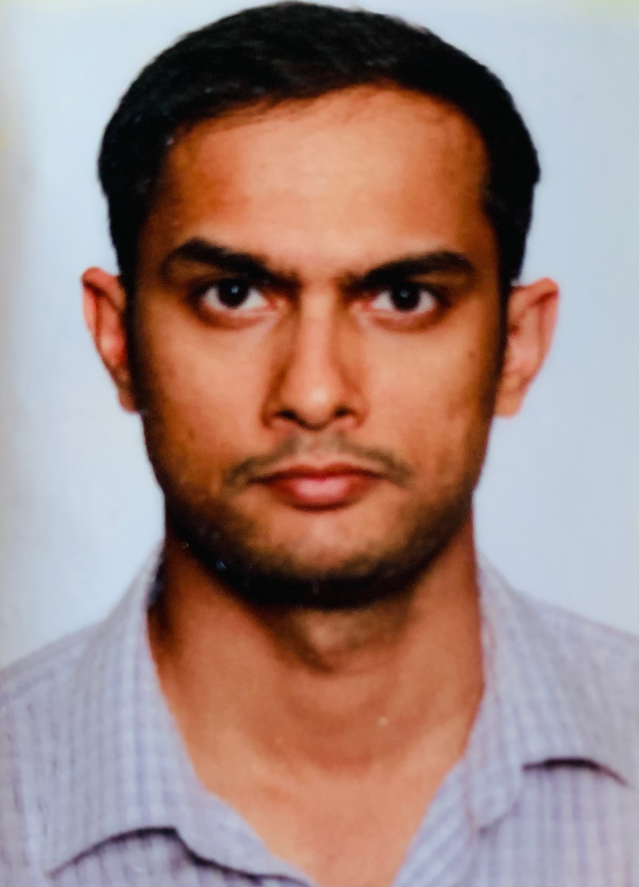
Principal Investigator
Sushant Kumar is the Canada Research Chair (Tier 2) in Genomic Medicine and an Assistant Professor in the Department of Medical Biophysics at the University of Toronto. He is also a scientist at the Princess Margaret Cancer Center. His expertise and research interests are in computational biology/bioinformatics, cancer biology, genomics, machine learning, and biophysics. Outside of work, he likes to watch sports documentaries and spend time with family.
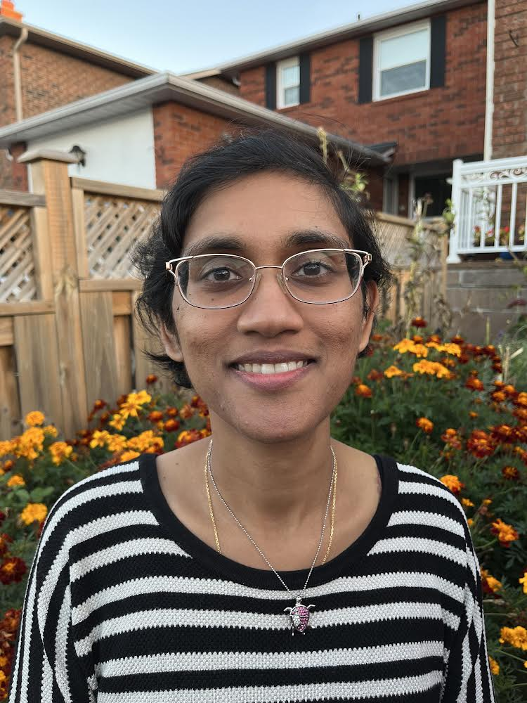
Postdoctoral Fellow
Nirvana Nursimulu is a postdoctoral researcher in the lab. She completed her undergraduate degree in Bioinformatics and Computational Biology at the University of Toronto, after which she embarked on a journey through graduate school at the University of Toronto studying Computer Science under the supervision of Dr Parkinson and Dr Moses. From her previous work, she remains fascinated by how mathematics can be used to capture biological phenomena and model the growth of parasites. In her free time, she enjoys reading and writing fiction, running, and has occasionally engaged in improvisational theatre.
Research interests: Metabolic rewiring in cancer
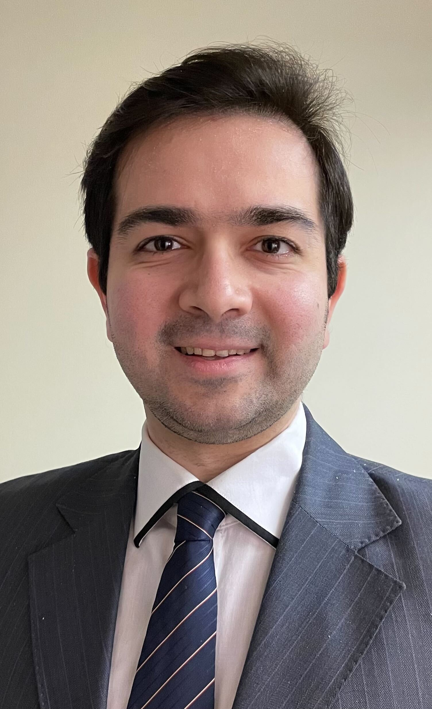
Postdoctoral Fellow
Saman Bazmi is a postdoctoral researcher in the lab. He completed his PhD in Computational Biophysics at Memorial University of Newfoundland. His research interests are computational biology, molecular dynamics, and cancer genomics. In his free time, he likes to watch criminal tv series, hiking, and cooking.
Research interests: DNA Structure and Dynamics, Machine Learning
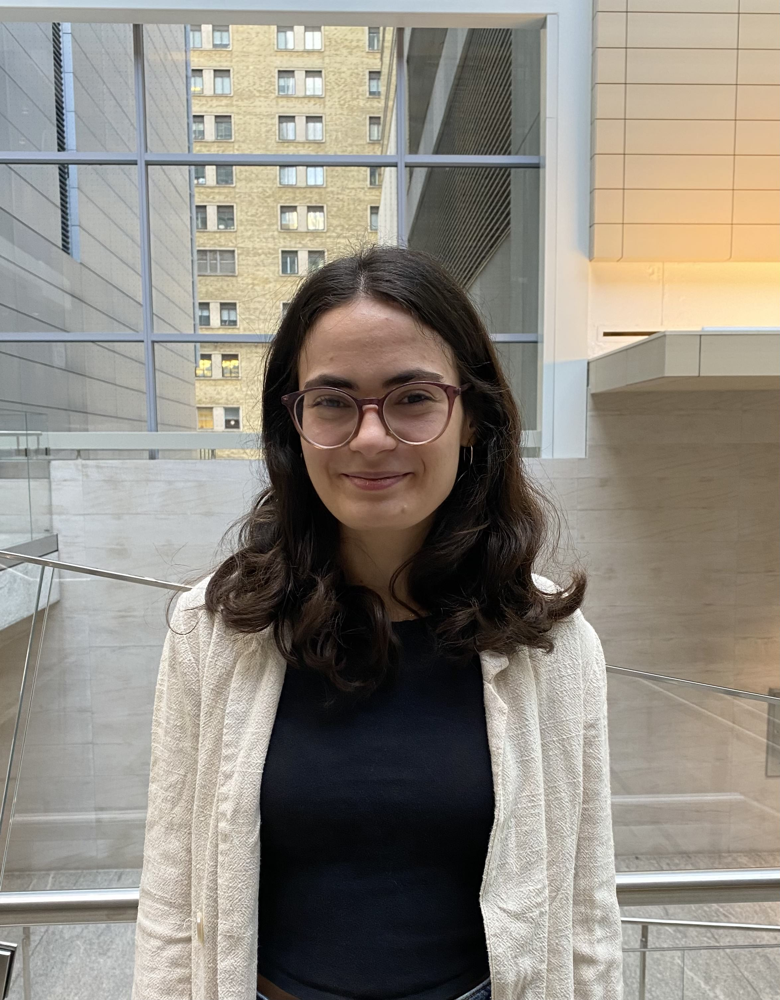
PhD Student
Nadejda Boev is a PhD student in the Department of Medical Biophysics at the University of Toronto. She completed her undergraduate degree in Biology & Mathematics at Queen's University. In her free time, she enjoys going on walks and listening to podcasts.
Research interests: DNA repair. rare disease and cancer genetics, DNA shape
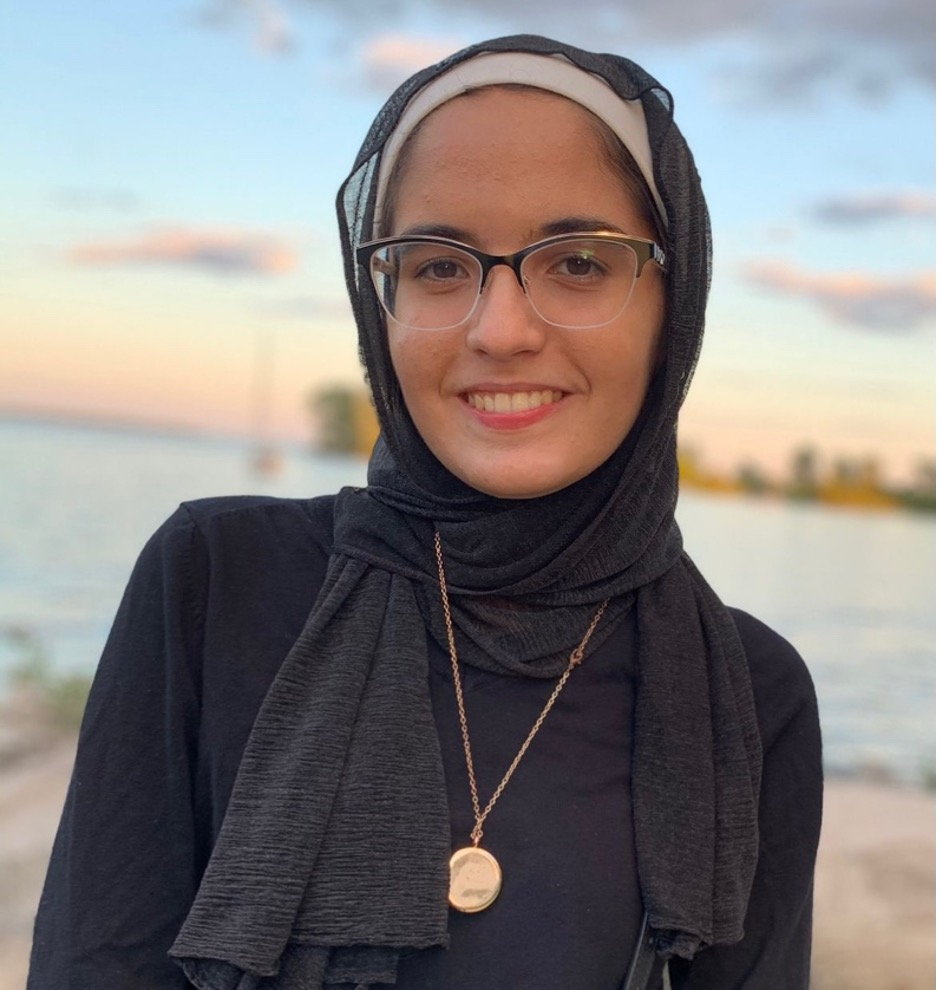
PhD Student
Nour Hanafi is a PhD student in the Department of Medical Biophysics at the University of Toronto (U of T). She completed her undergraduate degree in Molecular Biology with a Chemistry minor at U of T Mississauga, an MHSc in Medical Genomics at U of T, and worked as an analyst at the SickKids’ Centre for Computational Medicine. In her free time, she enjoys long walks, trying out new iced drinks, and watching her favorite sports teams, Atletico Madrid and the Toronto Raptors.
Research interests: Protein structure and motion, variant effect, pentrance and expressivity, rare disease and cancer genetics

MSc Student
Alexander Turco is a MSc student in the Department of Medical Biophysics at the University of Toronto (U of T). He completed his undergraduate degree in Bioinformatics with a research specialization at McMaster University. In his free time, he enjoys Rubiks cubes, snowboarding, building computers, and playing his favorite video game, Stardew Valley.
Research interests: DNA sequencing, non-coding and dark genome, non-B DNA, tandem repeat expansions, machine learning for genomics
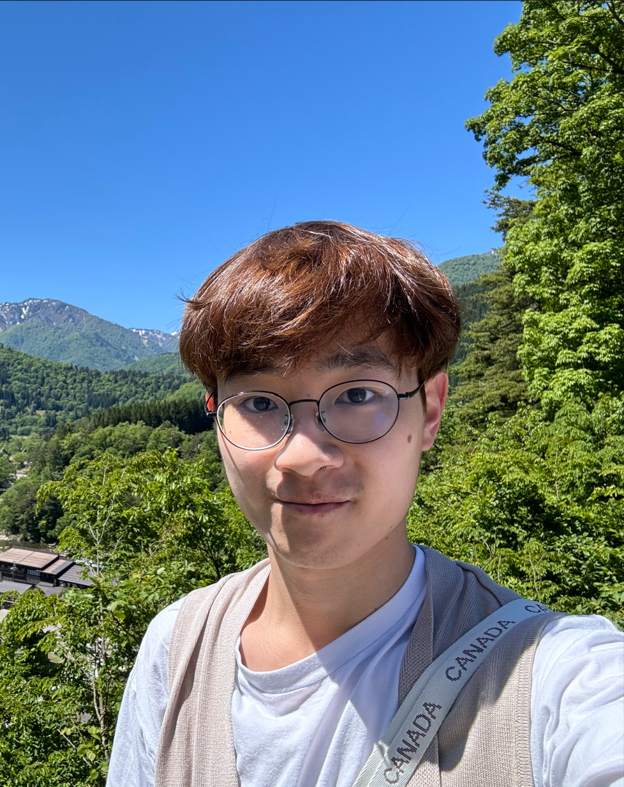
MSc Student
Hayden is a MSc student in Applied Computing at University of Toronto. Before that, he completed his undergraduate degree in Computer Science and Mathematics in Hong Kong. His interest surrounds computer vision and enhancing machine learning pipelines for industry uses. In leisure time, he likes hiking, bouldering, and snowboarding.
Research interests: computer vision, machine learning
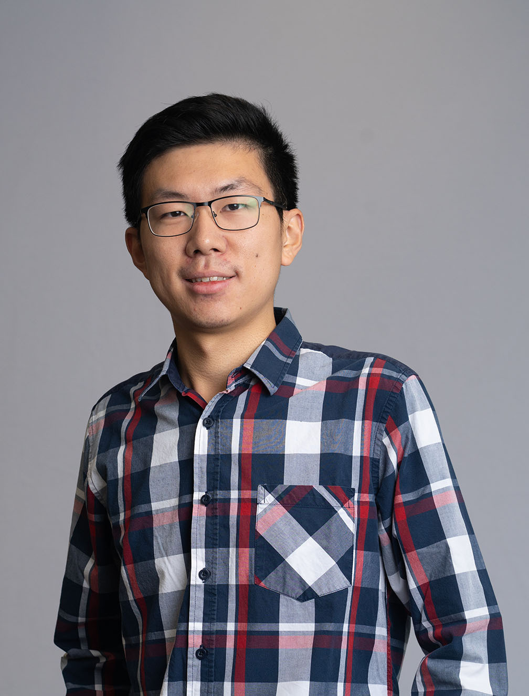
MSc Student
Mingjie Zhao is a MSc student in Applied Computing at the University of Toronto. He completed his undergraduate degree in Statistics and Data Science at the University of Waterloo. Outside of his studies, he enjoys long walks, cooking, and exploring his creativity through drawing and painting.
Research interests: Protein language models, protein structure, machine learning, liquid-liquid-phase separation
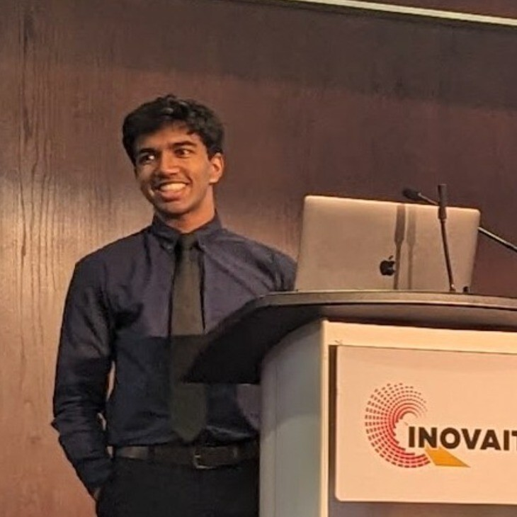
MSc Student
Sean D’Mello is an MSc student in Medical Biophysics at the University of Toronto and earned his undergraduate degree in Biomedical Engineering from the University of Waterloo. He completed several co-op placements applying machine learning to medicine, including at the ORTHOTron Lab at the University of Waterloo and the Tearney Lab at Massachusetts General Hospital. Outside of academics, Sean enjoys reading, swimming, and camping
Research interests: Machine Learning, Generative AI, Computational Pathology, Multi-omic Analysis
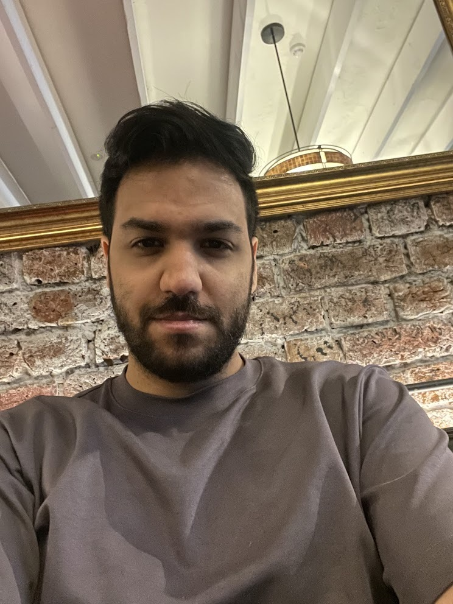
MSc Student
Omar Alawamry is an MSc student in Medical Biophysics at the University of Toronto, co-supervised by Dr. Mélanie Courtot, and earned his undergraduate degree in Biochemistry at McMaster University. He has conducted translational clinical research at Sunnybrook Research Institute, focusing on the development of liquid biopsies using emerging technologies such as imaging flow cytometry. His current interests lie in cancer genomics and the development of bioinformatic tools. In his free time, he enjoys preparing café-style drinks at home and playing tennis.
Research interests: Bioinformatics, Machine learning, Generative AI, Cancer Genomics
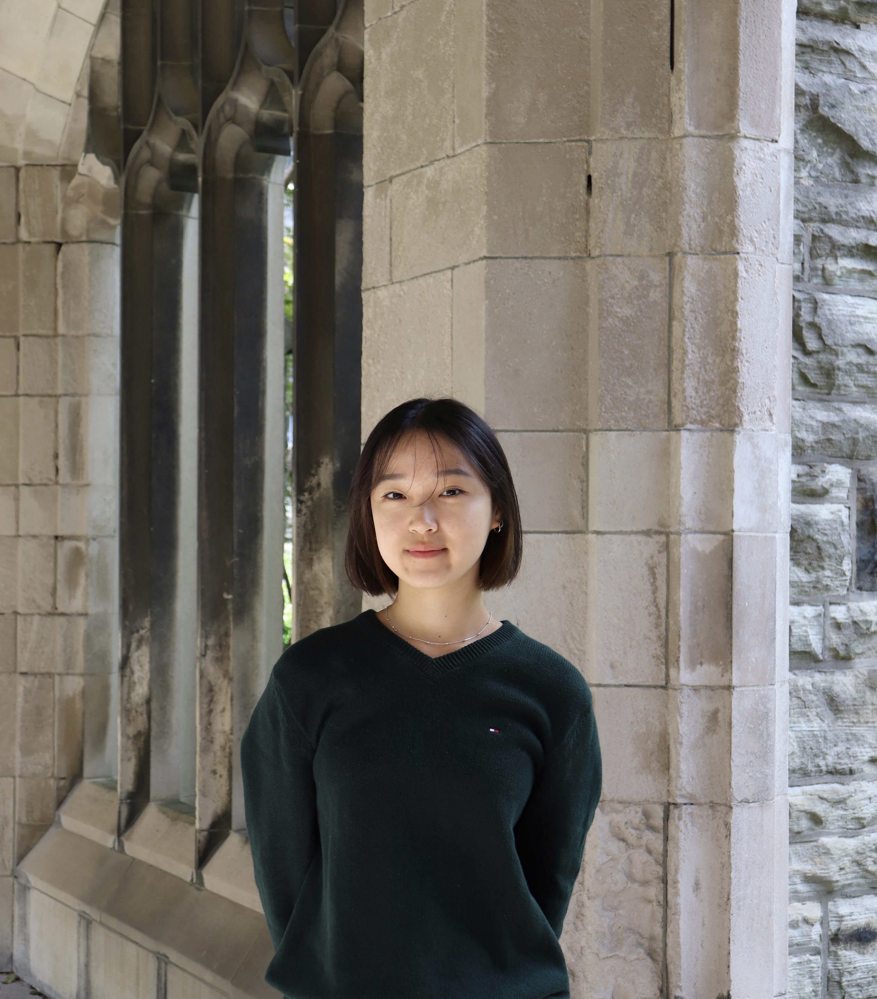
Undergraduate Student
Wendy Wan is an undergraduate student in the lab. She is completing her undergraduate degree in Bioinformatics and Computational Biology at the University of Toronto. She is interested in learning about bioinformatics methods, coding, and design. Outside of the lab, she enjoys attending music festivals, exploring new cafes and restaurants, and watch food videos.
Research interests: computer vision, machine learning
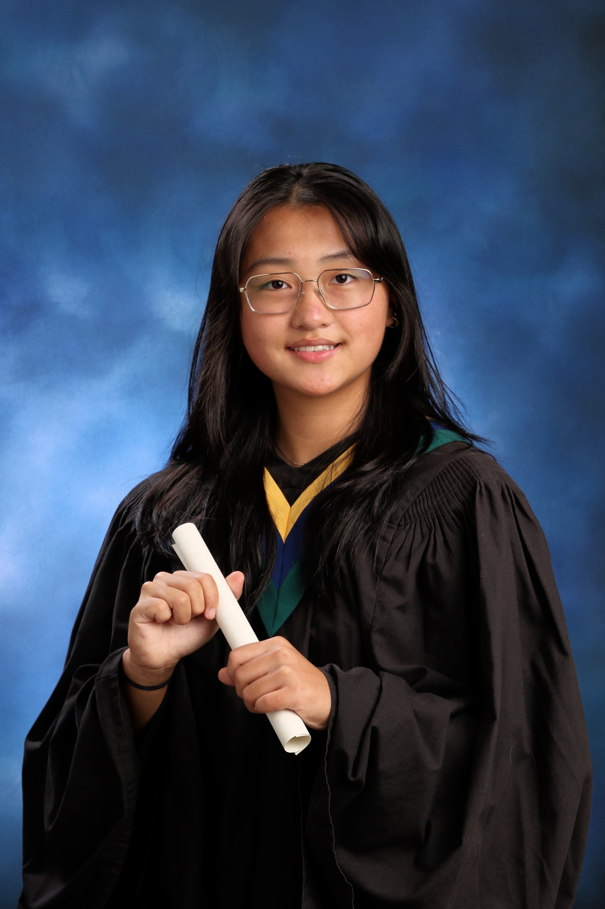
Undergraduate Student
Sophia Li is an undergraduate student in Computer Science and Bioinformatics & Computational Biology at the University of Toronto. Outside of her studies, she enjoys reading, attending music festivals, and watching the Amazing World of Gumball.
Research interests: Machine learning, computational pathology, multimodal learning
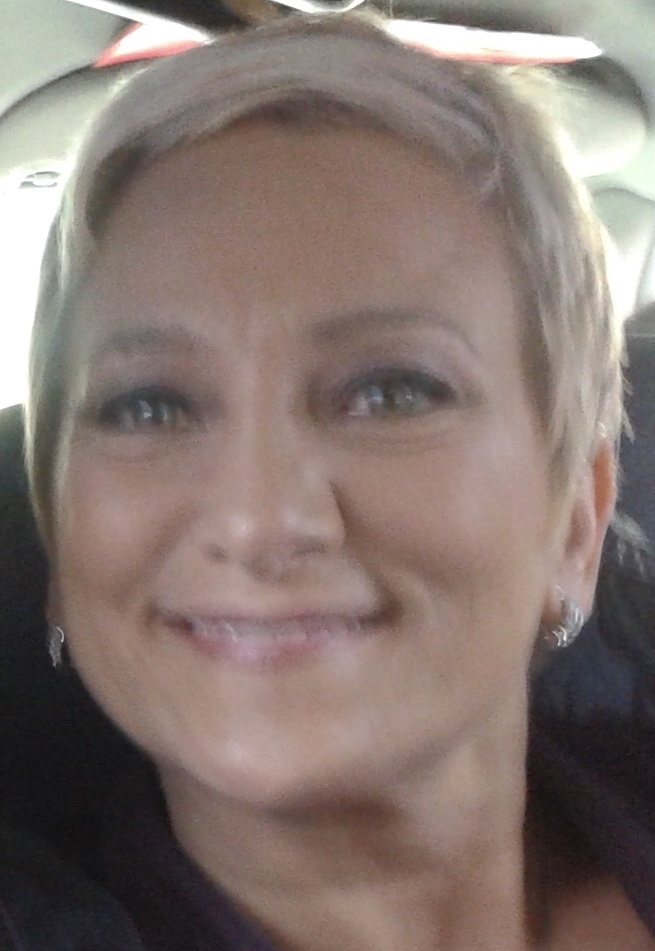
Administrative Assistant
Lucy Fuccilo is the administrative assistant for the CCGLab. She has extensive experience working at princess margaret. Outside of the lab Lucy loves to walk her dog Watson, who is extremely cute.